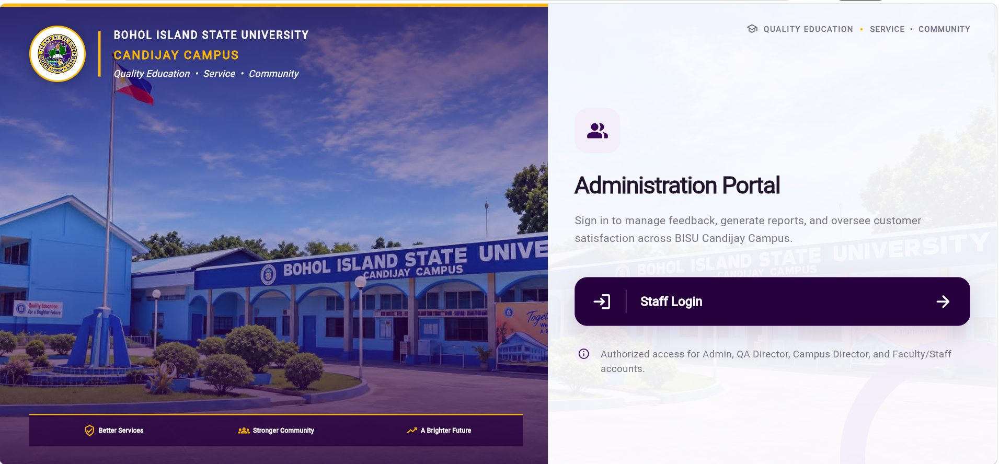
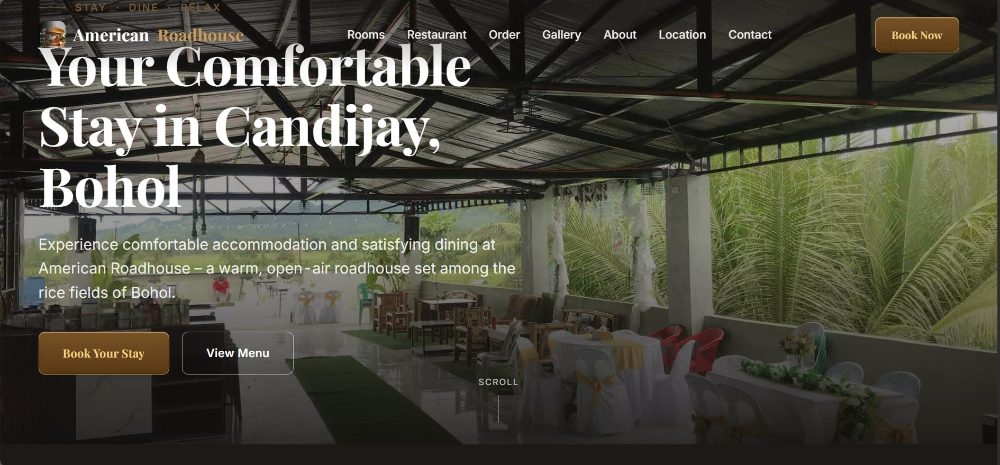

HTML5
Web structure
Learning & practiceHELLO, I'M
Computer Science Student / Aspiring Developer
I'm a Computer Science student at BISU Candijay Campus with an interest in software development, web technologies, and creating practical digital solutions. I'm continuously learning and building projects to strengthen my programming skills.
A LITTLE ABOUT ME
I'm Kinson Busis, a Computer Science student at Bohol Island State University — Candijay Campus.
I'm interested in programming, software development, problem-solving, and discovering how technology can make everyday tasks easier. Through personal and academic projects, I keep exploring new tools, practicing my skills, and learning how to turn ideas into useful digital experiences.
I'm still growing as a developer, and I believe that consistent practice, curiosity, and thoughtful problem-solving are important parts of the journey.
Explore my learning journeyMY TOOLKIT
Tools I've worked with or am learning as I continue developing my skills.
Web structure
Learning & practiceLayout & styling
Learning & practiceWeb interactions
Learning & practiceApp development
Learning & practiceCross-platform UI
Learning & practiceApp backend services
Learning & practiceDesktop & scripting
Learning & practiceVersion control
Learning & practiceDevelopment environment
Used for projectsSELECTED WORK
A selection of projects I've been working on as I learn, experiment, and build.

ACADEMIC PROJECTA feedback management application for BISU Candijay Campus, designed around collecting and managing service feedback to support review and reporting workflows.
01 scan_document(text)
02 matched_terms = recognizer.scan()
03 if matched_terms:
04 generate_report()
A Python desktop application that scans text and documents for selected gender-neutral language terms, highlights matches, and generates a report.

HOSPITALITY WEBSITEA website project for American Roadhouse Hotel and Restaurant, presenting its hospitality offerings through a warm, modern, photo-led design.
A responsive personal website built to introduce me, showcase projects, and share my learning journey using a distinctive black-and-gold visual identity.
NOTE Project demo and repository links marked as placeholders need to be replaced with your real URLs before publishing.
THE PROCESS
I'm focused on building a strong foundation and growing through hands-on practice.
Developing my understanding of computing, programming concepts, and problem-solving at BISU Candijay Campus.
Applying what I learn through web projects, a feedback management application, and a Python desktop tool.
Exploring tools and techniques, improving code quality, and building practical digital solutions one step at a time.
Have a question, an idea, or an opportunity to connect? Feel free to reach out.
I'll help you explore Kinson's work, skills, and journey.